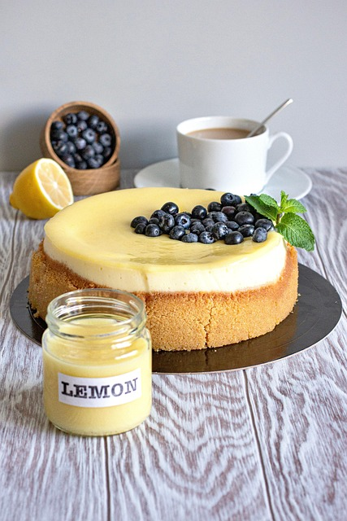

This rich and creamy New York–style cheesecake features a buttery graham cracker crust and a smooth, tangy filling.
Perfect for special occasions or a classic dessert any time.

An old-fashioned cheesecake is waiting to be enjoyed!
Ingredients
1 1/2 cups graham cracker crumbs
1/4 cup granulated sugar
1/2 cup melted butter
4 packages (8 oz each) cream cheese, softened
1 cup sugar
1 tsp vanilla extract
4 large eggs
2/3 cup sour cream
2/3 cup heavy cream
Instructions
Preparation: Preheat your oven to 325°F (163°C) and grease a 9-inch springform pan.
Crust: Mix graham cracker crumbs, sugar, and melted butter. Press into the bottom and sides
of the pan, then bake for 10 minutes. Let cool.
Filling: In a large bowl, beat the cream cheese until smooth. Add sugar and vanilla extract;
mix well.
Add eggs one at a time, then mix in sour cream and heavy cream until the batter is smooth.
Bake: Pour the filling over the crust and bake for 1 hour. Turn off the oven, crack the door,
and let the cheesecake rest inside for another hour.
Chill: Cool completely, then refrigerate for at least 4 hours or overnight before serving.